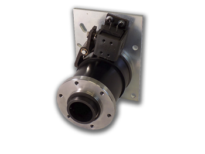
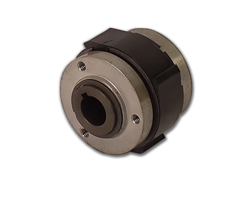
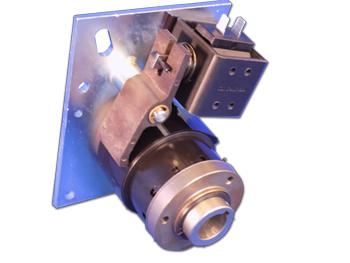
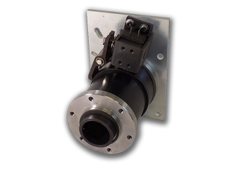
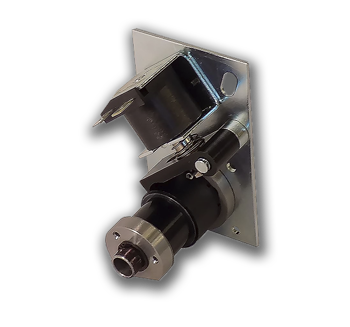
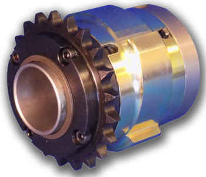

Crossover Product Catalog

Crossover Drives specializes in design & manufacture of industrial wrap spring clutches & brakes. Single fractional revolution indexing solenoid units with mechanical or pneumatic actuation through to electromagnetically actuated units. |
PSI Series are mechanical overrunning and indexing wrap spring clutches offering simple control and construction with reliable performance and the excellent torque density of a wrap spring device. |
 |
CB Series wrap spring clutch brakes offer exceptional start/ stop cycling performance by providing +/- ½° non-cumulative accuracy over an average 10 million cycle life combined with simple control. The best choice for cost effective indexing consistency. |
 |
Super CB Series wrap spring clutch brakes offer the same great performance of the CB Series but with a 3 to 5 times increase in life due to optimized materials and reinforced wear points. |
 |
SAC Series offer lower cost clutch only start capability in applications where controlled braking is not important. A single AC or DC pulse will typically bring loads up to speed within 3 milliseconds. |
|
CB Short Series are a more compact version of the popular CB Series, but with less braking torque. |
|
|
SP Series offer reduced clutch and minimal brake functions in an extremely small package. |
|
 |
Accumulating Conveyor Clutches are designed for use in CDLR (chain driven line roller) pallet accumulation applications. Mechanically actuated or packaged with electric actuation, they feature robust construction and can be supplied with or without sprocket s and lubrication points. |
Crossover Drives can develop and design custom wrap spring assemblies and standard designs into your machine to provide a simpler, more cost effective and reliable integration and control solution.